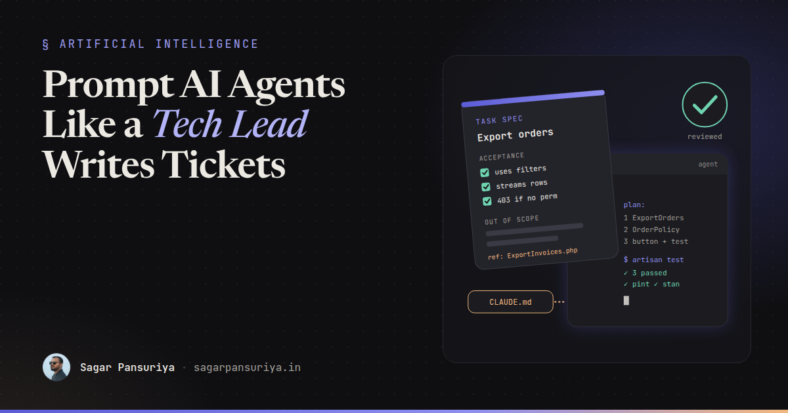
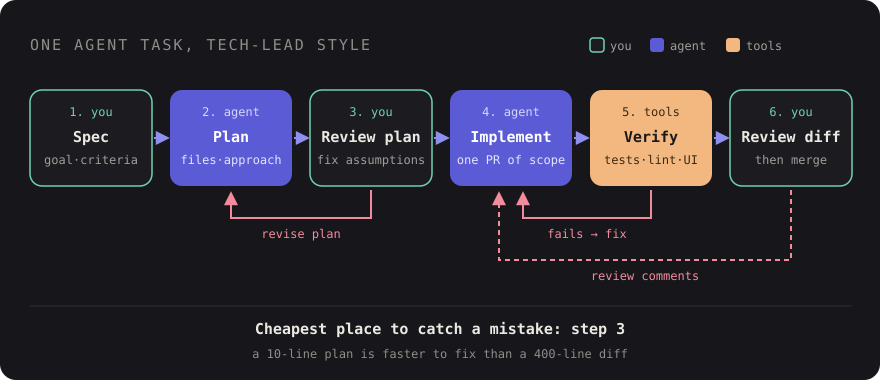

Prompt AI Coding Agents Like a Tech Lead Writes Tickets


Picture handing a new developer on your team a Slack message that says "add CSV export to the orders page" and walking away. They're smart and fast. An hour later you get a working export that loads every order into memory, ignores the filters on the page, skips the authorization check, and puts the button in a place nobody asked for. None of that is their fault. You gave them a wish, not a ticket.
That's what most prompts to AI coding agents look like. Claude Code, Cursor's agent, Copilot's coding agent: they're all remarkably capable, and they all fill gaps in your instructions with guesses. The fix isn't clever prompt tricks. It's the same skill a good tech lead already uses every day: writing a clear spec, pointing at the right code, and defining what "done" means.
This post is how I think about briefing agents, with a reusable task-spec template and a before/after example for a Laravel feature.
The mental model: a fast new hire with no memory
An agent can read your whole codebase in seconds, but it doesn't know why anything is the way
it is. It doesn't know your team avoids repositories, that OrderService is
legacy, or that the last three exports caused memory issues on production. Every session
starts close to zero.
So your job splits into two layers:
- Standing context: things that are true for every task in this repo. These belong in a context file, written once.
- Task context: what this specific change is, where it lives, and how you'll know it works. This belongs in the prompt.
Layer one: context files
Most agents read a project instructions file automatically. Claude Code reads
CLAUDE.md, a growing number of tools read AGENTS.md, and GitHub
Copilot reads .github/copilot-instructions.md. The names differ; the idea is the
same. Treat it like the onboarding doc you wish every new developer read.
Keep it short and specific. Agents follow concrete rules much better than values statements. "Write clean code" does nothing. "Use Form Requests for validation, never validate in controllers" changes the output.
# CLAUDE.md
## Stack
Laravel 12, Livewire 3, Alpine, Tailwind. Pest for tests. MySQL.
## Commands
- Tests: `php artisan test --parallel`
- Format: `vendor/bin/pint --dirty`
- Static analysis: `vendor/bin/phpstan analyse`
## Conventions
- Validation lives in Form Requests (app/Http/Requests), never in controllers.
- Business logic goes in single-purpose Action classes (app/Actions). See CreateInvoice.php.
- Authorization via Policies. Every controller action calls $this->authorize() or uses can: middleware.
- Blade components in resources/views/components. Reuse x-button, x-table, x-filters.
- No new Composer or npm packages without asking first.
## Don't touch
- app/Legacy/ (anything inside it is being replaced, changes go through the team lead)
- database/migrations that are already deployed; add new migrations instead.Two habits make this file pay off. First, list the commands, so the agent can run your tests and linters without guessing. Second, update it every time you correct the agent about the same thing twice. That's the file doing the job a code review comment would otherwise do, forever.
Layer two: write the task like a ticket
A good ticket answers six questions. So does a good prompt:
- Goal: what the user should be able to do, and why.
- Where: the files and routes involved, plus a reference file that already does something similar.
- Acceptance criteria: observable behaviour you can check, one per line.
- Constraints: performance, security, conventions, things to avoid.
- Out of scope: what not to change. This matters more than people think. Agents love to "improve" nearby code.
- Verification: which tests to write or run, and what to show you at the end.
Pointing to a reference file is the single highest-leverage line in most prompts. "Follow the
pattern in app/Actions/ExportInvoices.php" gives the agent your naming, your
structure and your error handling in one sentence, far better than describing them.
Before and after: CSV export for orders
Here's the wish version:
Add a CSV export button to the orders page.It will produce something. Whether it respects the current filters, streams large result sets, checks permissions, or has a test is up to chance. Here's the ticket version:
## Goal
Admins on /admin/orders can download the currently filtered orders as CSV,
so finance can reconcile without asking a developer for a query.
## Where
- Page: app/Livewire/Admin/OrdersTable.php + its Blade view
- Reference: app/Actions/ExportInvoices.php and its test. Follow the same structure.
- Filters already live in OrdersTable::query(). Reuse it, don't duplicate the filter logic.
## Acceptance criteria
- An "Export CSV" button (x-button, secondary) sits next to the existing filter bar.
- The file contains only orders matching the active filters and search.
- Columns: order number, placed at (Y-m-d H:i), customer email, status, total (2 decimals).
- Filename: orders-YYYY-MM-DD.csv
- Users without the orders.export permission don't see the button and get a 403 on the route.
## Constraints
- Must handle 200k rows without loading them all into memory (stream the response,
iterate with lazy() or cursor()).
- No new packages.
- Follow CLAUDE.md conventions (Action class, Policy).
## Out of scope
- Don't change the table UI, pagination or existing filters.
- No queued/emailed exports yet.
## Verification
- Pest feature tests: filtered export content, 403 for unauthorised user, filename.
- Run php artisan test, pint --dirty and phpstan; all must pass.
- Finish with a short summary of files changed and anything you were unsure about.
Before writing code, reply with a plan: files you'll create or change and the approach.
Wait for my OK.Nothing here is clever. It's just what a careful tech lead writes in a ticket. It takes a few minutes, and it saves the round trips of "no, use the filters", "no, it runs out of memory", "you forgot the permission check".

Ask for a plan first
The last line of that prompt is the most important one. Reviewing a ten-line plan takes a minute. Reviewing a 400-line diff built on a wrong assumption takes much longer, and then you throw it away.
Claude Code has a dedicated plan mode for this, and in any tool you can simply say "don't write code yet, propose a plan". When the plan comes back, check three things: does it touch the files you expected, does it reuse what exists instead of reinventing it, and did it spot something you missed? Correcting the plan is where you get the most value per minute spent.
Keep tasks small
Agents get noticeably worse as the scope of a single task grows. The context fills with files, early decisions get forgotten, and the diff becomes too big to review properly. The rule I use is the same one I'd give a human: if it wouldn't be one reasonable pull request, split it.
For a bigger feature, break it into a sequence: migration and model, then the Action with its tests, then the Livewire UI, then polish. Start a fresh session for each step, with the spec and a note about what already exists. Each step is small enough to review, and each leaves the codebase in a working state.
Build a verification loop
An agent that can check its own work is dramatically more reliable than one that can't. Give it ways to find out it's wrong before you do:
- Tests: ask for the tests in the acceptance criteria, and ask it to run them. Writing the failing test first, then the code, works well with agents too.
- Static analysis and formatting: PHPStan/Larastan and Pint catch a lot of the small mistakes agents make, like wrong types or methods that don't exist.
- Screenshots: for UI work, if your setup lets the agent drive a browser or take screenshots, ask it to compare the result against a design or a reference page. If not, check it yourself before accepting.
A Pest test for the export gives both you and the agent a clear definition of done:
it('exports only filtered orders', function () {
$admin = User::factory()->withPermission('orders.export')->create();
Order::factory()->create(['status' => 'paid', 'number' => 'A-100']);
Order::factory()->create(['status' => 'refunded', 'number' => 'A-101']);
$response = $this->actingAs($admin)
->get(route('admin.orders.export', ['status' => 'paid']));
$response->assertOk()->assertDownload('orders-' . now()->format('Y-m-d') . '.csv');
expect($response->streamedContent())
->toContain('A-100')
->not->toContain('A-101');
});(withPermission() stands in for however your app assigns permissions in
factories.)
Review the output like a pull request
Passing tests don't mean the code is right. They mean the code does what the tests check. Review agent output with the same care as a junior developer's PR, and look specifically for the things agents tend to get wrong:
- Duplicated logic that already exists elsewhere in the codebase.
- Changes outside the stated scope, including "helpful" refactors.
- Missing authorization, or validation that trusts user input.
- N+1 queries and loading whole tables into memory.
- Tests that assert on implementation details, or that were weakened to pass.
- Invented APIs: methods or config options that look plausible but don't exist.
You're still the one shipping this code. The agent is a very fast pair of hands, not a second reviewer. If you wouldn't merge it from a person, don't merge it from a model.
A reusable task-spec template
Keep this in a snippet or a file in the repo and fill it in for every non-trivial task:
## Goal
[What the user can do after this change, and why it matters.]
## Where
- Files / routes / components involved:
- Reference to follow: [path to a similar, well-written file]
## Acceptance criteria
- [Observable behaviour 1]
- [Observable behaviour 2]
- [Permission / error / empty state behaviour]
## Constraints
- [Performance, security, conventions, no new packages, etc.]
## Out of scope
- [What must not change.]
## Verification
- Tests to write/run:
- Commands that must pass:
- Summarise files changed and open questions at the end.
First reply with a plan. Don't write code until I approve it.The short version
- Put standing rules and commands in
CLAUDE.md/AGENTS.md, and update it whenever you repeat a correction. - Write tasks as tickets: goal, where, acceptance criteria, constraints, out of scope, verification.
- Always point to a reference file.
- Ask for a plan and review it before any code gets written.
- Keep each task to one reviewable pull request.
- Give the agent tests, linters and screenshots so it can catch its own mistakes.
- Review the diff like a human wrote it, because you're the one merging it.
None of this is new. It's what good tech leads have always done for their teams. The difference is that the "team member" now reads your ticket in a second and starts typing immediately, so the quality of the ticket matters more than ever.
Discussion